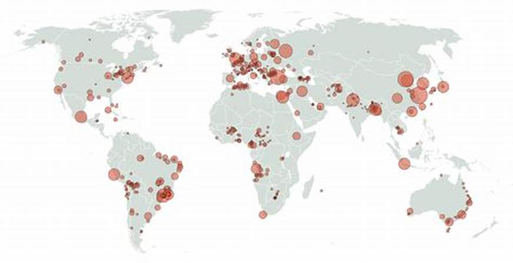
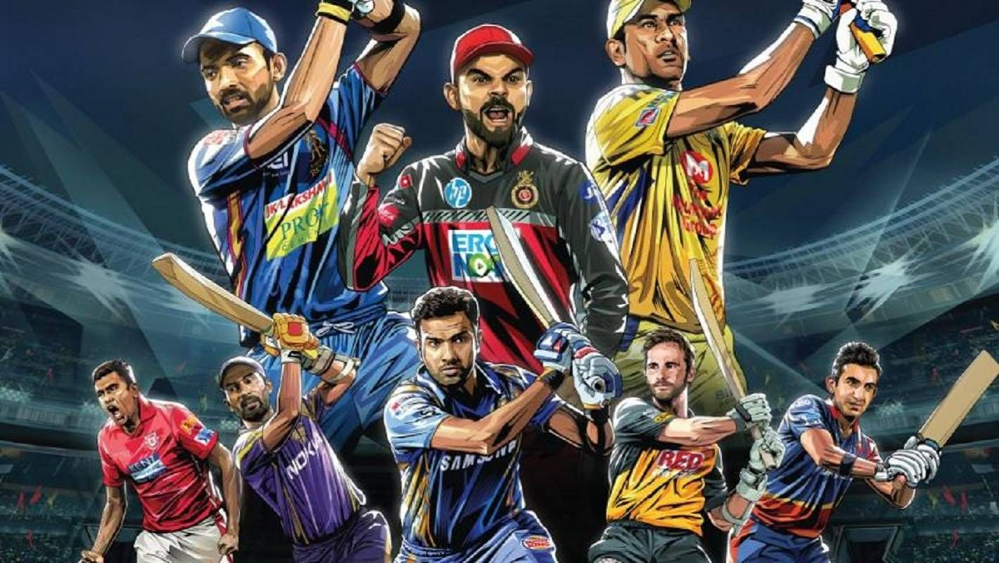
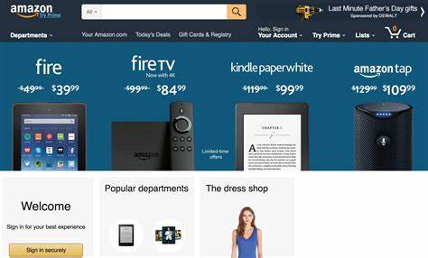

About
Aspiring Data Scientist Ready to Launch a Promising Career in Data Science
I am a highly driven individual with a deep enthusiasm for data science and a keen interest in extracting valuable insights from data. I am actively seeking entry-level positions as a Data Scientist.
My professional journey includes extensive experience as a Quality Control (QC) Officer in the chemical industry, where I developed strong competencies in communication, presentations, strategy, and training. My educational background includes a Bachelor's degree in Chemistry from Bhakt Kavi Narsinh Mehta University, providing me with a robust foundation in quality control.
I am now excited to apply my analytical capabilities and industry expertise to the field of data science. I am dedicated to continuous learning and the application of data science methodologies to address real-world challenges and support informed decision-making.
View My Resume
Projects

Created a user-friendly Corona Dashboard that provides detailed state-wise and monthly COVID-19 statistics.
The dashboard features interactive visuals for confirmed cases, recoveries, and deaths, offering a clear
and concise view of the pandemic's impact across different regions.
This Nifty50 dashboard provides comprehensive insights into Nifty 50 stocks,
including descriptions, quarterly results, profit-loss statements, shareholding patterns,
stock price charts, and candlestick charts. The data spans from March 2022 to March 2023,
offering a detailed view of the financial performance and market trends of these stocks.
Explore the Live Version: Link

This dashboard offers extensive information on IPL matches played between 2008 and 2022,
providing a detailed overview of match data and performance trends over the years.
Explore the Live Version: Link

A sophisticated web scraper to gather detailed product reviews from Amazon.
The scraper efficiently extracts information such as review titles, ratings, authors
and full review text.
Explore the Live Version: Link
Discover the latest YouTube videos with ease using our YouTube Scraper.
This advanced web application dynamically fetches real-time data from YouTube,
providing you with up-to-date video titles, view counts, posting dates, and thumbnails.
Explore the Live Version: Link
This dashboard provides an in-depth analysis of the 2024 General Election in India, focusing on:
Party Ad Spend: 'Tracks financial investments in ads by various political parties',
Voter Turnout Analysis: 'Examines voter participation across different states and election phases',
Electorate Data: 'Presents information on total registered voters and the percentage of votes cast'
Explore the Live Version: Link
Contact